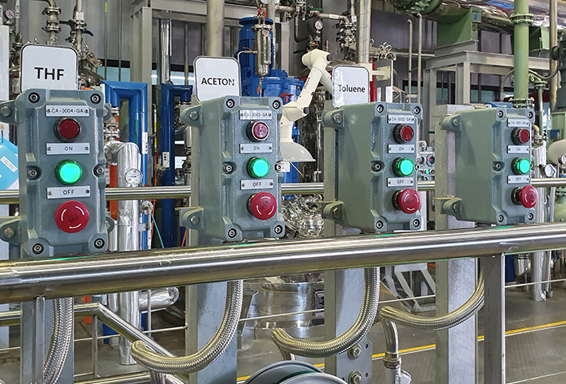
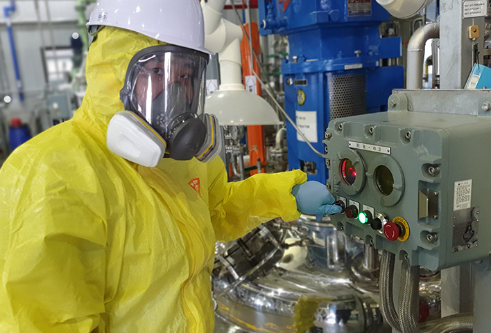
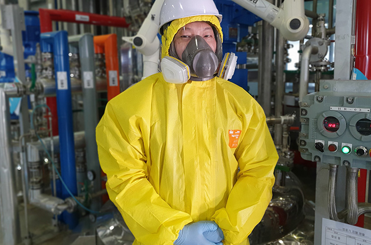
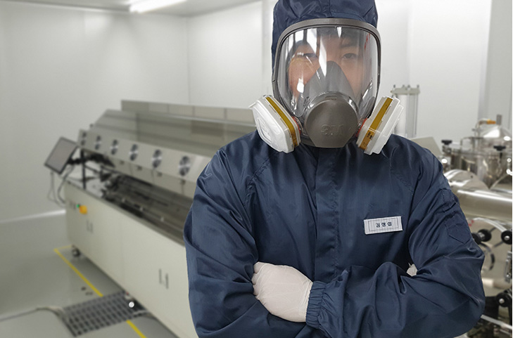

우리 (주)CMDL은 사업 개시 이래 OLED 제품을 전문적으로 양산해온 기업입니다. 오랜 경험을 바탕으로
형성된 노하우와 양산 데이터를 활용하여 고객에 최적화된 제품을 양산하고 있습니다.
이를 통해 우리는 고품질, 고효율, 저비용 생산 시스템을 구축하여 고객에게 제공하여 있으며, 현재도
세계 유수 기업이 우리와 수년과 파트너쉽을 맺고 있습니다.
INTRODUCTION

OLED 전문 양산 기업, 세계 유수 기업과 파트너쉽

다년간 숙력된 합성 인력, 고객의 요구사항 즉각 대처
다년간 합성 유경험자로 구성된 합성 인력들은 고객의 요구사항을 항상 만족시켜 왔습니다. 고객이 미처 생각하지 못한 화학제품 양산 상황에 즉각적으로 대처하여 고객과 신뢰관계를 유지하고 있습니다. 고객의 제품을 안전하고 안정적인 방법으로 양산에 적용하고 있습니다.
합성, 품질관리, 승화정제까지 고객이 원하는 초고순도 재료 양산 시설 토탈 솔루션
전자재료 특성상 제품은 항상 고순도를 유지해야 합니다. 다년간 숙련된 합성인력은 고객이 요구하는 수준의 높은 품질의 제품을 양산할 준비가 되어 있으며,
모든 과정에서의 품질관리와 승화정제 필요시 즉각 대처 가능한 인력과 시설도 항상 준비되어 있습니다.

